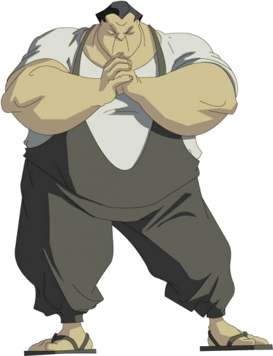

ADVENTURE OF Jackie_Chan

Uncle Chan
Uncle, as he is known (he is called "sensei" by Tohru,) is the uncle of Jackie and granduncle of Jade. He has a very stereotypical Cantonese-accented drawl, usually talks in third person about himself, and often uses Cantonese in many aspects of his speech (his magic incantation, "Yu Mo Gui Gwai Fai Di Zao" ("Yiu2 mo1 gwai2 gwaai3 faai3 di1 jau2" ) (妖魔鬼怪快哋走), means "Evil demons and malevolent spirits, be gone!" in Cantonese.) His most commonly used magical items are a dried salamander and puffer fish; both having backgrounds in Asian remedies. Tea is his favorite drink, but he often complains it's too hot or cold and always throws the cup when he finishes. He has a variety of catchphrases - the two most common being "aiyah!" and "one more thing" - almost all of them used as admonitions to other characters.
Born in the year of the Dog (The Dog and Piggy Show,) Uncle is the owner of an antique store (originally an 8-track tape store) and an accomplished chi wizard, learning his skills from the famed Master Fung. As a child, he was part of the Seven Little Fortunes opera troupe (which the real Jackie Chan was a part of,) and thus received opera school training. In addition, he is an accomplished martial artist in his own right, and according to Jackie in The Dog and Piggy Show, Uncle himself was just like Jackie at the same age (20s-30s). He did not know any magic when Jackie was a young boy, suggesting he studied under Master Fung when Jackie was a teenager or in college. Apparently, after he became too old for more aggressive martial arts, Uncle studied a fighting style that allowed him to knock out opponents by using nerve points (he also uses the Vulcan nerve pinch instead of actual pressure points.) Whenever a magical enemy is near, Uncle gets what he calls "the willies."

A running gag has Uncle hitting Jackie or at least another character over the head with a two-fingered strike, sometimes preceded by his catchphrase, "Come closer to Uncle." Jackie is his usual target, but Captain Black, Jackie's dark side, Tohru, Daolon Wong, Hsi Wu the Sky Demon, Super Moose, and on one or two occasions himself have all been victims to this particular attack.
He is not very capable with technology: he does not understand devices such as faxes (he gets all his facts from books,) laptops (calling Jade's a "magic waffle iron,") and the World Wide Web. In spite of this, he has on several occasions performed spells long-distance using these devices. In the episode "The Shadow Eaters," he is revealed to have a passion for oil painting (stating that Uncle needed time for Uncle.)
Another gag is that nobody knows his true name or exactly how they are related to him; even Jade's visiting parents call him Uncle. They then explain that they think that he is actually their cousin.
Tohru ( BEEMA )

A very large Japanese man, Tohru was once an Enforcer for the Dark Hand and a personal servant for Valmont. From the episode centered around the Pig and Dog talismans, Tohru started to have second thoughts about working for the Dark Hand. Several things point to this, from Jackie trying to tell Tohru to come and work for Section 13 because "they serve donuts every Thursday" (which he stated back in episode 13) to all the insults and blames he bore through his working for the Dark Hand and betraying them, always angering him. However, when the Dark Hand managed to revive Shendu, the demon sorcerer double-crossed them. Forced to fight Shendu alone, Tohru was quickly defeated, after which he changed his allegiances, and turned himself in to Section 13's authorities. After an ordeal that allowed Tohru some degree of freedom, he became Uncle's apprentice and developed a close big-brother relationship with Jade, whom he becomes very protective of. Tohru shows great loyalty to whoever he stands by, even back to the time when he was an Enforcer for the Dark Hand.
Though Tohru's size and body mass would suggest he is among the biggest people in the world, he is considered too small to be a sumo wrestler in the reality of the series (as seen in the third season's episode "Re-Enter the J-Team.") In the fourth season, he is found to be a descendant of a samurai. After he and Uncle banished Shendu and Drago, Uncle decides that Tohru is now a full Chi Wizard. He likes grape soda and hates fish (a cultural irony, given that one of Japan's prime dietary components is fish,) and seems to have a fondness for cats, having used the Monkey talisman several times to mutate enemies into kittens (which Uncle is allergic to.) He becomes a vital character in the fourth season when they have to battle evil Oni, which only he has knowledge of due to childhood tales told by his mother. While he knows how to fight and repel them, he has a deep-set fear of them which proves a somewhat crippling hindrance over the course of the fourth season. Also, just as Uncle had around other dark magical beings, Tohru gets "the willies" when he's around Oni.